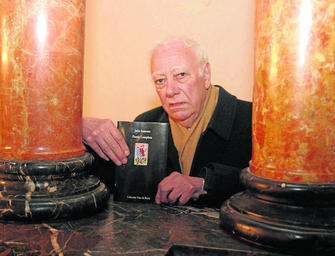

"Tú, que todo lo diste, desnuda te has quedado.
Tú, que todo lo amaste, sin amor hoy te encuentras.
Alma mía rendida, vendida en un suspiro".
JULIO AUMENTE, El aire que no vuelve;
1955
JULIO AUMENTE
Introducción
Biografía
Nace en Córdoba en 1921 y muere en 2006. Fuen un poeta español perteneciente al Grupo Cántico [Revista publicada en 1947]
Poemas
BAJO LA LLUVIA MIRA..
[...]
El sordo galopar de los lobos del viento
cuando la madrugada agoniza sin ruido
y surgen las primeras gotas, sobre la tierra,
de lluvia, como un cirmen revelado de arriba.
Pero las nubes siguen su centinela en alto.
No puedes escapar alma, no hay horizonte.
Vuelve al agua y al loto podrido de tu estanque,
cadáver que cadáver refleja en terso espejo.
Vuelve a la hermosa tierra profanada a diario
que el cielo quiere en lluvia lavar de su miseria
tierra de la mentira sin amor y sin fruto,
sin otra ley que oro y su amarilla risa.
Si recortas tus alas tendrás respeto eterno,
-si no alzaras la vista más allá de los muros-.
Si te conmueve un grito déjalo sin respuesta,
pues a nada conduce interrogar al aire.
Mas si hay un fuego arriba, ellos lo tendrán todo,
los que con un suspipro liberan la pobreza.
aquellos que envenenan el paisaje si miran,
y su presencia seca la sonrisa y los pájaros.
Vuélvete a tu retiro alma que entre cristales
y oxidados barrotes tu tristeza consumes.
Bajo la lluvia fina, bajo la lluvia, mira
pasar la arena rápida de tus contados días.
Julio Aumente; "El aire que no vuelve", 1955.